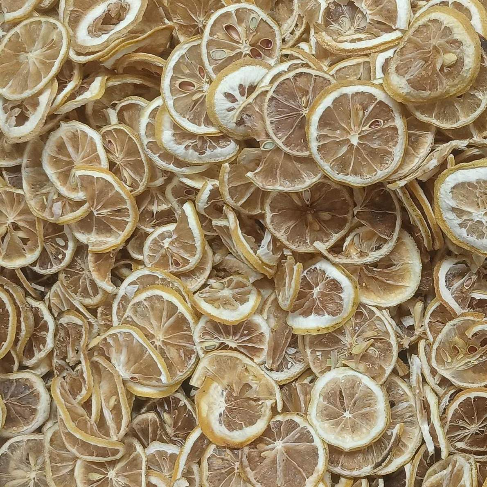

メニュー
品書き
メニューは、ただいま準備中です。
メニュー・価格・提供内容は、お店からご提供いただいた情報で掲載します。以下の枠は、掲載する品を入れるための空欄で、実際の提供内容を示すものではありません。
一の枠準備中
二の枠準備中
三の枠準備中
四の枠準備中
五の枠準備中
六の枠準備中
ギャラリー(イメージ)
色あざやかな素材の写真。





写真はフリー素材のイメージです。お店で提供している商品を示すものではありません。
ご案内
お店のこと(確認できたものだけ)
| 所在地 | 〒314-0141 茨城県神栖市居切1547-1 人見店舗 B号 |
|---|---|
| 電話 | 準備中 |
| 営業時間 | 準備中 |
| 定休日 | 準備中 |
| ご予約 | 準備中 |
| 駐車場 | 準備中 |
| SNS | Instagram @monakanocafe |